Durante el mes cargás lo que ya sabés. Al cierre resolvés lo que el sistema no pudo decidir solo. Todo lo demás se paga solo.
Lo único que hay que entender antes de empezar.
El plan se paga solo cuando la marcación lo acompaña. Cuando no, el día se normaliza.
20 minutos al entrar y 20 al salir de cada tramo. Llegar antes no cuenta.
En julio y agosto, 84% y 70% de los días sin que nadie los toque.
Cada decisión queda con quién, cuándo y la nota.
El menú está agrupado en lo del mes y los datos.
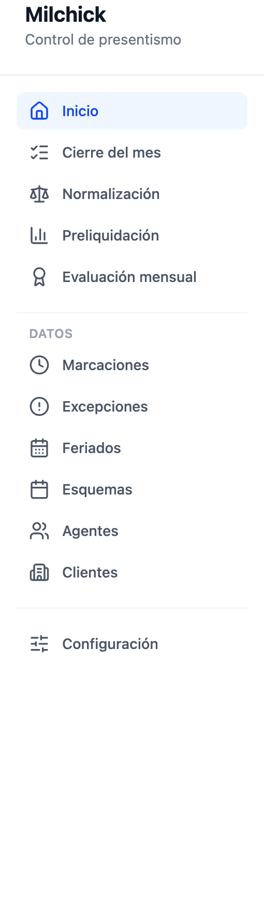
| Pantalla | Para qué |
|---|---|
| Inicio | Lo pendiente de hoy: quién no marcó, marcaciones abiertas, días a normalizar. |
| Cierre del mes | El recorrido del cierre, paso por paso, para todos los agentes. |
| Normalización | La bandeja de los días que no cierran. |
| Preliquidación | Las preliquidaciones de cada agente: detalle, ítems, confirmación, resumen del período. |
| Evaluación mensual | REG, SUPER REG y monotributo de cada agente, mes a mes. |
| Marcaciones | Corregir o reponer marcaciones. |
| Excepciones | Licencias, ausencias, cambios de jornada, coberturas, y las horas fuera del esquema. |
| Feriados | El calendario de feriados. |
| Esquemas | El horario habitual de cada agente. |
| Agentes · Clientes | Altas, tarifas, datos. |
| Configuración | Multiplicadores, período y márgenes (lo toca el administrador). |
Cierre del mes es el recorrido; la preliquidación es el documento. Cada agente tiene una preliquidación por mes: sus horas día por día, los conceptos, el neto. Cierre del mes es la pantalla que te lleva de la mano por los cinco pasos del cierre para todos los agentes a la vez, y cada paso trabaja sobre esas preliquidaciones: el paso 3 las crea o actualiza, el 4 resuelve sus días, el 5 las confirma.
Usás Cierre del mes para avanzar con el mes, y Preliquidación cuando necesitás mirar o corregir el detalle de un agente, o exportar el resumen.
El cierre en cinco pasos. Se hace de arriba abajo.
| Paso | Qué mira | Qué hacés |
|---|---|---|
| 1 · Datos del mes | Agentes sin esquema o sin tarifa, y los feriados del mes | Completar lo que falte. Sin esquema y tarifa no se liquida |
| 2 · Evaluación mensual | A quién le falta | Cargarla |
| 3 · Preliquidar | Quién no tiene preliquidación | Preliquidar, o Actualizar todas |
| 4 · Normalizar | Días que no cierran, y esquemas que parecen desactualizados | Ir a la bandeja |
| 5 · Confirmar | Las que están listas | Confirmar las listas y, al final, Resumen para pagar |
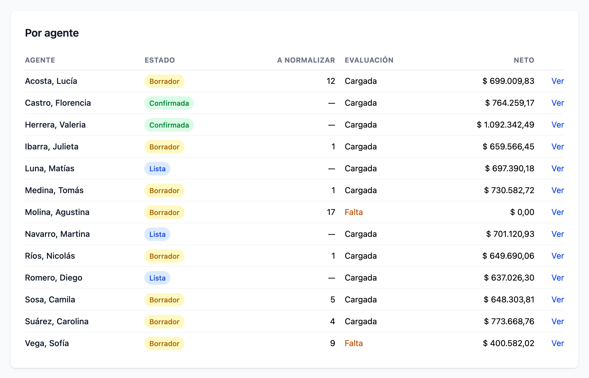
Los días del mes que no cierran, uno por renglón.
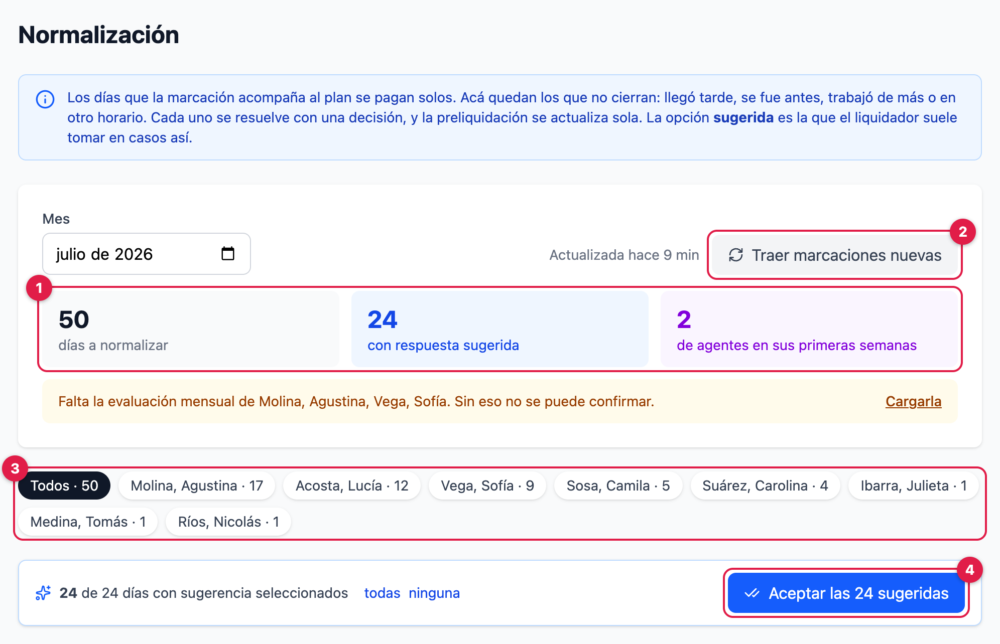
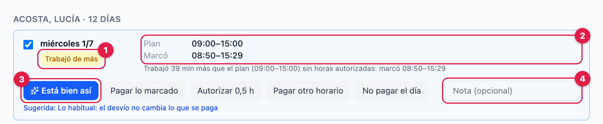
Una sola por día: si el día tiene dos motivos —llegó tarde y tenía horas autorizadas— una decisión lo resuelve entero.
Se paga lo que calculó el sistema: el plan, y las autorizadas hasta lo que se ve en la marcación.
Cuándo: el desvío no cambia lo que corresponde pagar.
Se paga lo que marcó, todo como horas normales, cada hora en su banda.
Cuándo: trabajó otro horario de verdad.
El plan más esas horas con el tramo que elijas, hasta lo que trabajó de más.
Cuándo: trabajó de más y corresponde pagarlo con recargo.
Lo autorizado se paga aunque la marcación no lo muestre.
Cuándo: un arrastre del mes anterior, una marcación mal hecha.
Los tramos que cargues, cada hora en su banda.
Cuándo: lo acordado no es ni el plan ni lo marcado.
Nada. Un feriado se sigue compensando.
Cuándo: no trabajó y no corresponde pagarlo.
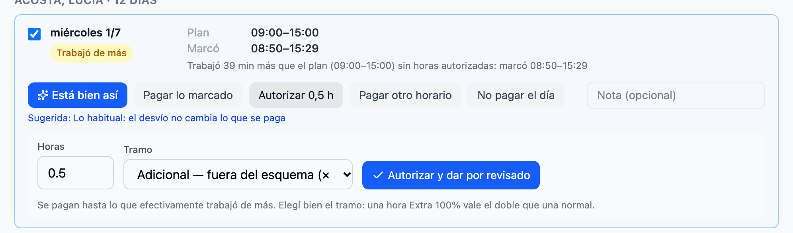
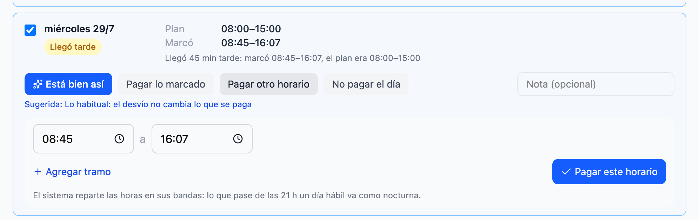
| El día dice… | Qué significa | Lo habitual |
|---|---|---|
| Trabajó, pero en otro horario que el plan. | Pagar lo marcado, si son las mismas horas | |
| Hay horas autorizadas que la marcación no muestra. | Pagar lo autorizado igual | |
| Marcó en un feriado sin cobertura cargada. | Dejarlo como feriado, Pagar lo marcado o Autorizar, según lo acordado | |
| Marcó en vacaciones, licencia o ausencia. | Dejar la licencia o la ausencia, según lo acordado | |
| Agente nuevo | Sus primeras dos semanas: se revisan siempre y sin sugerencia. | Mirarlo con quien lo capacitó |
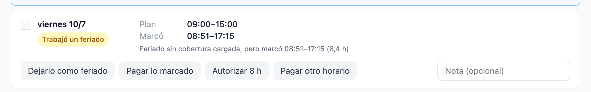
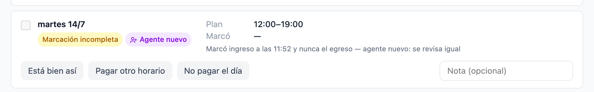
Las sugeridas vienen tildadas. Destildá las que no van.
Antes de aplicar te muestra cuántas de cada tipo.
Las que quedan, sin sugerencia, se resuelven de a una.
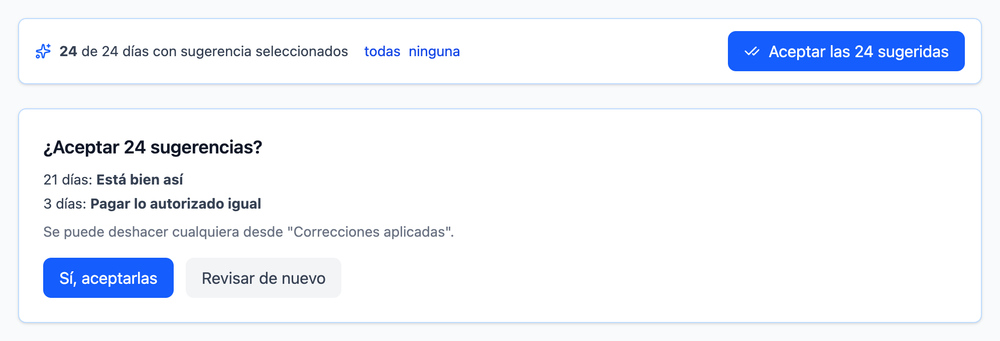
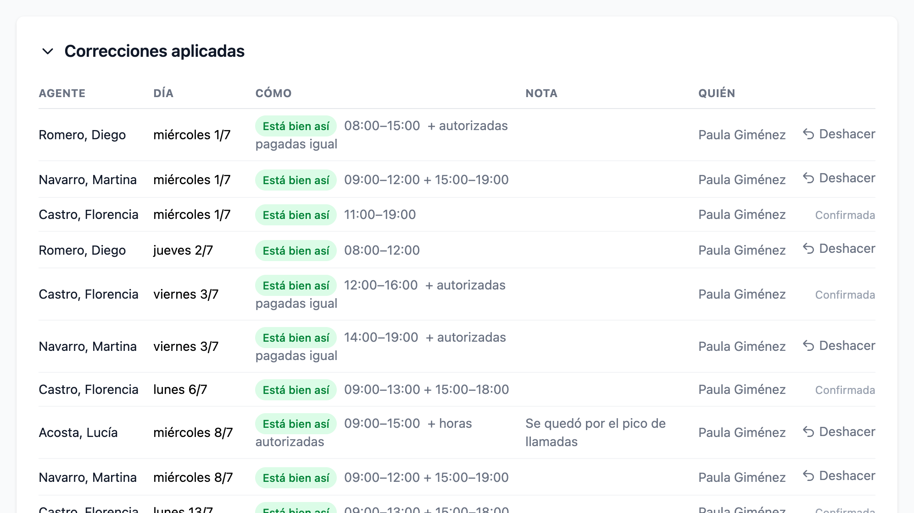
Una por agente y por mes. Mientras es borrador, está viva.
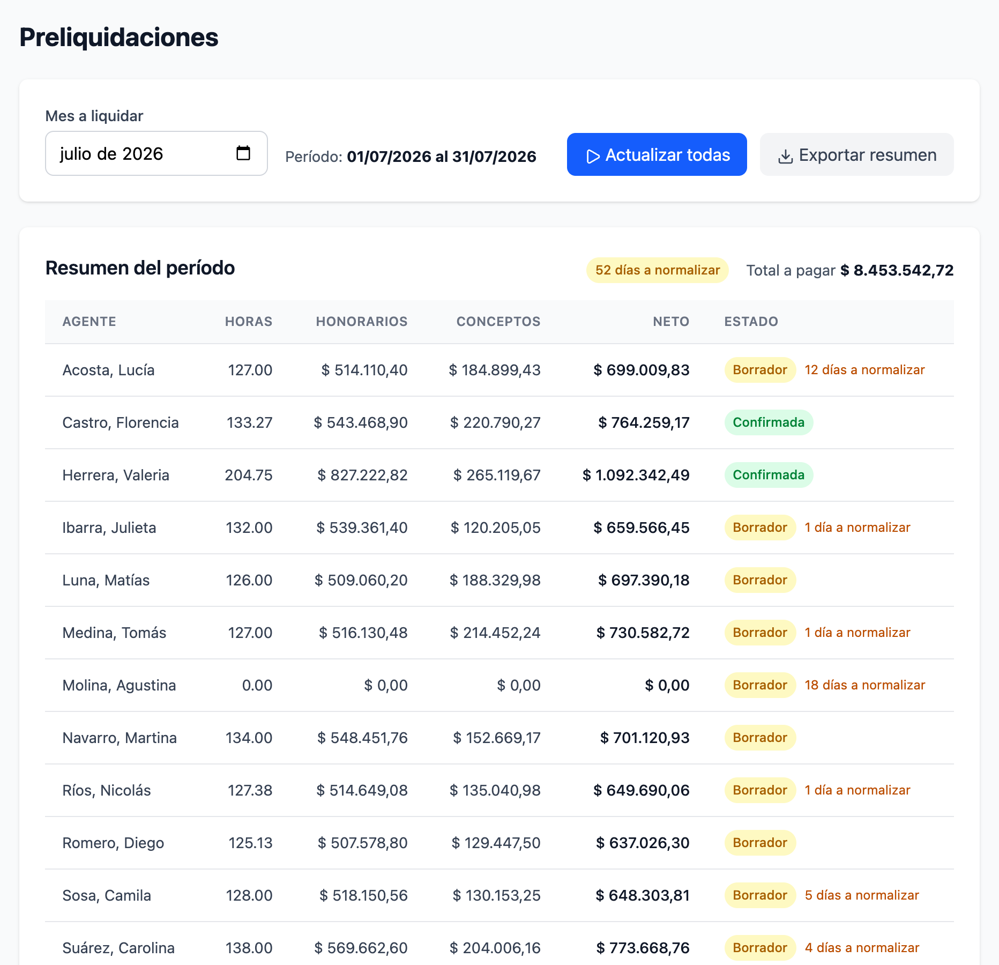
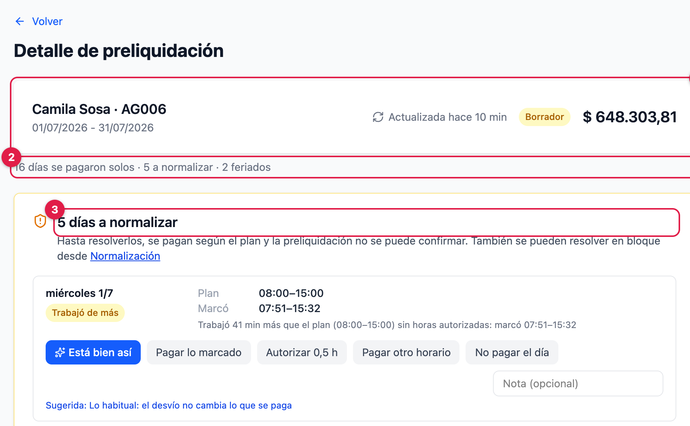
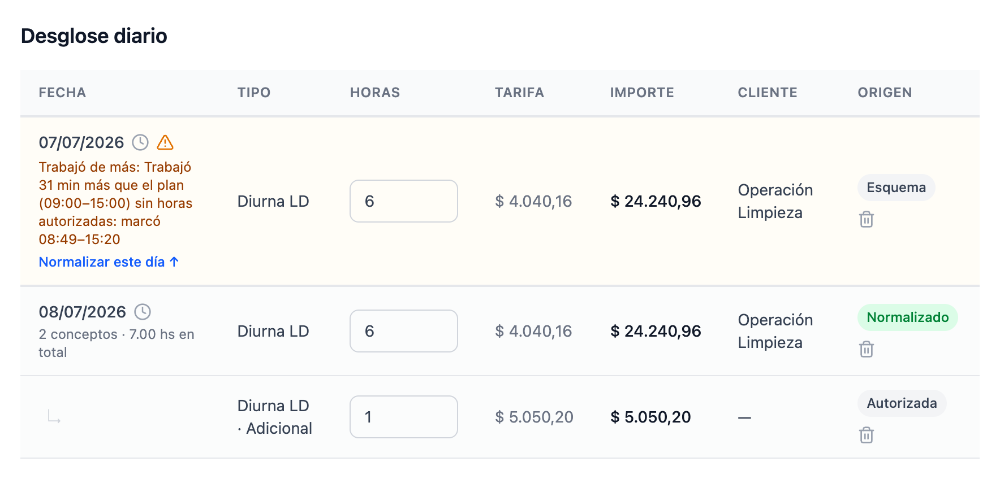
| Origen | De dónde sale |
|---|---|
| Esquema | El plan del día, pagado solo |
| Licencia, o el horario de una excepción | |
| Autorizada | Horas autorizadas |
| Normalizado | Una decisión o una edición a mano |
| Compensación | La compensación diaria fija |
| Ajuste | Un día proyectado del mes anterior |
Cambiar las horas de una línea, o Agregar un día, deja una corrección Horas cargadas a mano, que se conserva en cada recálculo.
Una línea marcada Proyectado es un día que todavía no pasó: se paga el plan y, si termina distinto, la diferencia entra el mes siguiente.
El reloj junto a cada fecha muestra lo que marcó, las excepciones y las horas autorizadas de ese día.
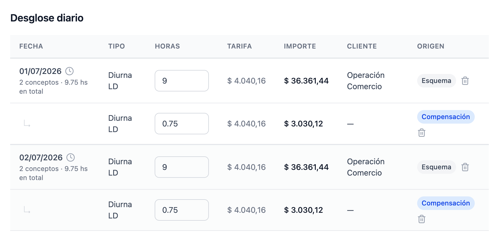
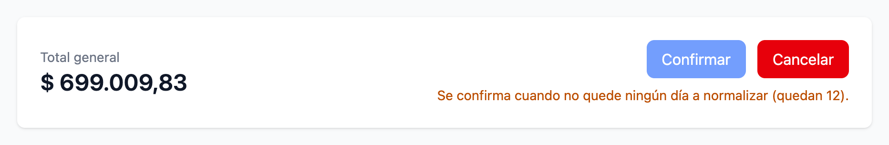
| Forma | Cuándo | ¿Se recalcula? |
|---|---|---|
| Importe fijo | Un reintegro puntual | No |
| Porcentaje del subtotal | Un premio sobre honorarios | Sí |
| Por tiempo, a valor hora | 45 min × 20 días a Diurna LD | Sí |
Lo que cargás cuando pasa. Una excepción a tiempo es un día que se paga solo.
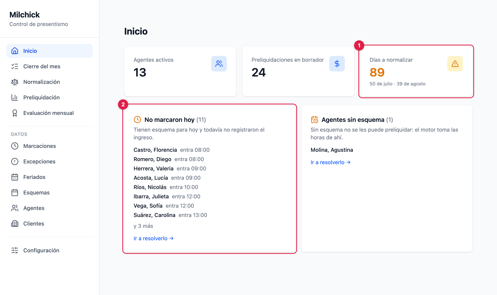
Además: Marcaciones sin cerrar (alguien marcó ingreso y no egreso) y Agentes sin esquema o sin tarifa, que tiene que estar en cero.
Corregís lo que el agente no pudo: un ingreso olvidado, un egreso abierto. Carga individual o masiva para varios días. Dejá una nota diciendo por qué. Corregir una marcación recalcula la preliquidación: si el día ahora acompaña al plan, sale solo de la bandeja.
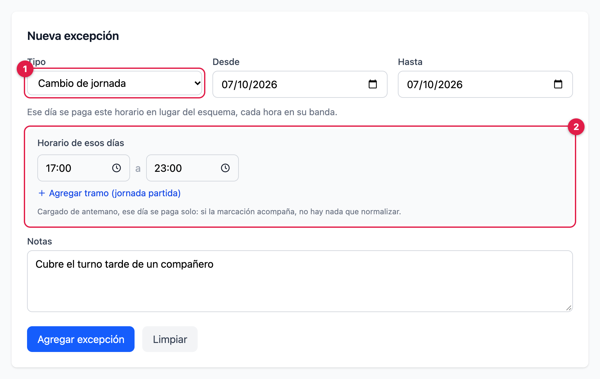
| Tipo | Qué hace |
|---|---|
| Ausencia | El día no se paga |
| Vacaciones | Se paga el plan y suma al plus vacacional |
| Licencia paga | Se paga el plan, sin plus vacacional |
| Cambio de jornada | Con horario, reemplaza al esquema ese día |
| Cobertura extraordinaria | En un feriado, lo vuelve día trabajado; con horario, sirve también un día sin esquema |
Trabaja de lunes a viernes de 9 a 15, y el miércoles va a hacer de 17 a 23. Cargás un Cambio de jornada para ese miércoles con horario 17:00 a 23:00.
Si marca 17 a 23, el día se paga solo, con lo que pase de las 21 como nocturna. Si no cargás nada, cae en la bandeja como Marcó en otro horario y se resuelve con Pagar lo marcado.
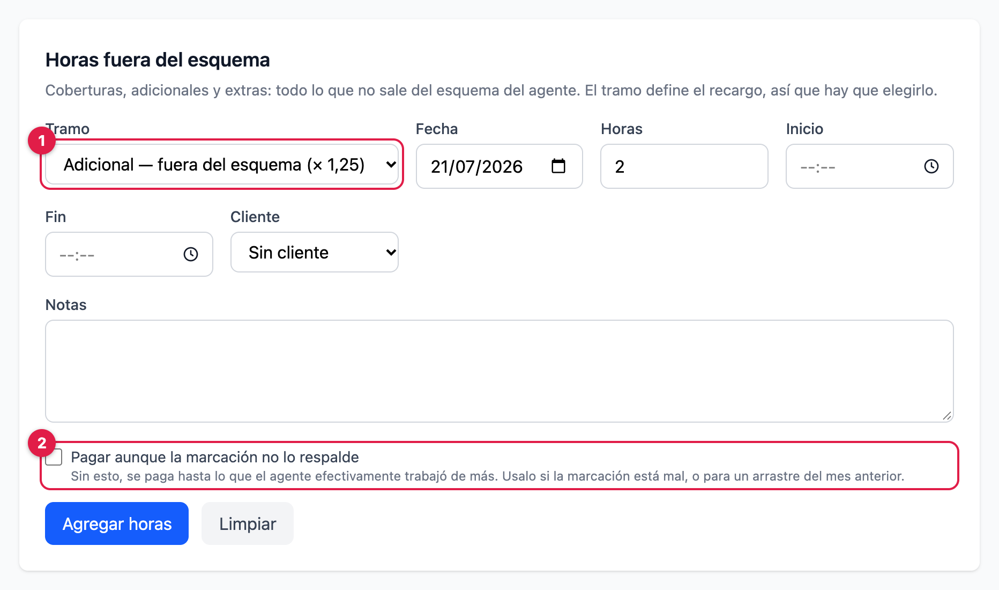
Es una autorización, no un pago: se paga con su tramo, hasta lo que la marcación muestra de más. Lo que se mide es el trabajo de más neto: lo trabajado menos el plan.
| Tramo | Se paga |
|---|---|
| Sin recargo | tarifa común |
| Adicional | × 1,25 |
| Extra 50% | × 1,50 |
| Extra 100% | × 2,00 |
Y al revés: si trabajó de más sin autorización, se paga el plan y el día cae en la bandeja como Trabajó de más, con Autorizar X h ya calculado.
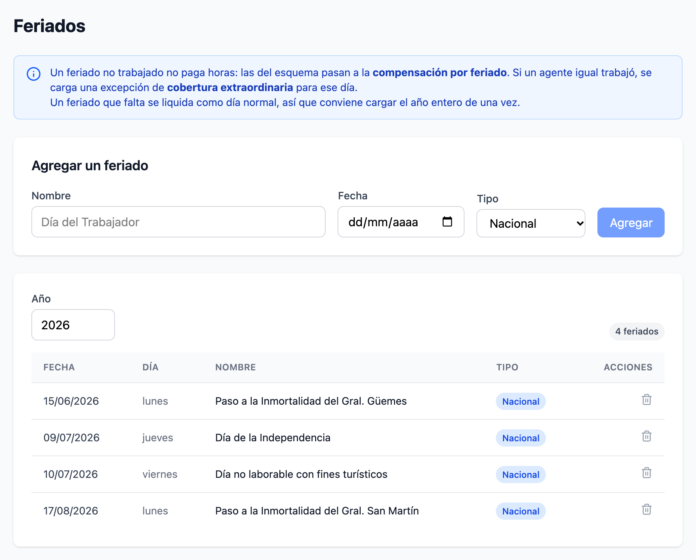
| Qué pasó | Qué se paga |
|---|---|
| No trabajó | Ninguna hora: las del esquema van a la compensación por feriado |
| Trabajó, con cobertura cargada | El día como trabajado |
| Marcó sin cobertura | Queda en la bandeja |
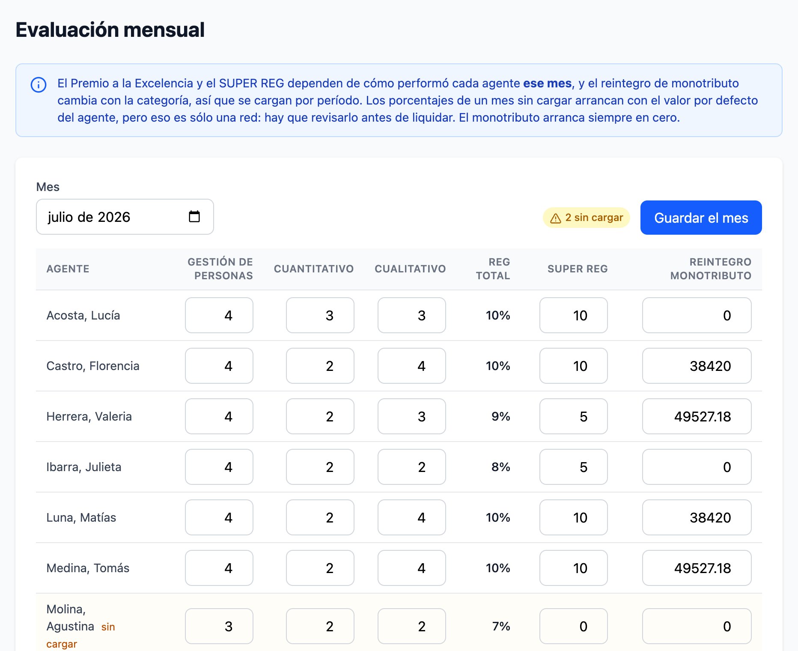
Por agente y por mes: los tres componentes del REG, el SUPER REG y el reintegro de monotributo.
Dependen de cómo performó cada uno ese mes, así que no se heredan. Un mes sin cargar arranca con el valor por defecto del agente, pero es una red, no un dato: sin la evaluación cargada no se confirma. El monotributo arranca en cero.
Los que frenan la confirmación hasta que decidís, y los que sólo quedan escritos.
| Aviso | Qué pasó | Lo habitual |
|---|---|---|
| Llegó tarde | Entró a un tramo pasados los 20 min, o no marcó el primer tramo | Está bien así |
| Se fue antes | Salió 20 min antes, se ausentó en medio, o no marcó un tramo posterior | Está bien así |
| Marcó en otro horario | La marcación casi no se superpone con el plan | Pagar lo marcado, si son las mismas horas |
| Trabajó de más | Más de 30 min por encima del plan, sin autorización | Está bien así; Autorizar si corresponde |
| Trabajó sin esquema | Marcó un día sin plan | Autorizar o Pagar lo marcado |
| Trabajó un feriado | Marcó en un feriado sin cobertura | Según lo acordado |
| Marcó un día de licencia | Marcó en vacaciones, licencia o ausencia | Según lo acordado |
| Autorizado y no trabajado · Autorizado de más | La marcación no muestra lo autorizado | Pagar lo autorizado igual |
| No marcó · Marcación incompleta | Sólo en agentes nuevos, o si se activó en Configuración | Revisar con el agente |
| Falta la evaluación mensual | No es un día: falta cargarla | Evaluación mensual |
| Aviso | Qué significa |
|---|---|
| No marcó · Marcación incompleta | En agentes con antigüedad se paga el plan: en julio y agosto fue siempre un olvido |
| Autorizado sin marcación | Se pagó lo autorizado sin marcación completa para contrastarlo |
| Ausencia | Día de ausencia registrado: no se pagan horas |
Lo que ya sabés, cargalo cuando pasa. Al cierre queda sólo lo que nadie podía saber.
Una página para tener a mano.